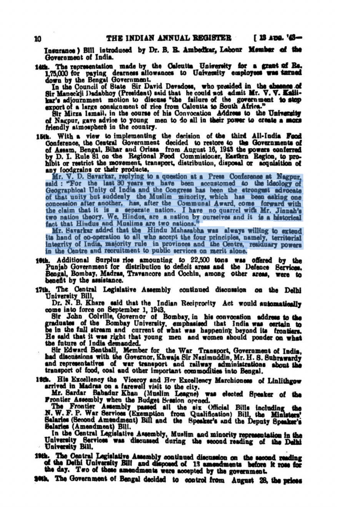

Invisibilis Historia
A History Notebook, by Vinamr Sachdeva.
August 24, 2022
Although Savarkar said that "[he had] no quarrel with Mr. Jinnah’a two nation theory. We, Hindus, are a nation by ourselves and it is a historical fact that Hindus and Muslims are two nations", he further added that "Hindu Mahasabha was always willing to extend its hand of co-operaiion to all who accept the four principles, namely, territorial integrity of India, majority rule in provinces and the Centre, residuary powers in we Centre and recruitment to public servicee on merit alone." The second-part of the quote is often missed by lefties who want to portray Savarkar as supporting Partition.

From Mitra, H. N., Ed. The Indian Annual Register. Vol 2. 1943. p. 10. https://archive.org/details/in.ernet.dli.2015.45825/page/n27/mode/2up.
From his demand of territorial integrity of India but him mentioning that Hindus and Muslims are two different nations, it seems like he was making a distinction between a nation and a state. He clarified this statement and told how he was half-quoted the next day to the newspaper Kaal:
From Sampath, Vikram. Savarkar (Part 2): A Contested Legacy, 1924-1966. p. 347.
In addition to this, Hindu Mahasabha's (including Savarkar himself) staunch opposition to the idea of partition can be noted:
From Majumdar, RC. History of Freedom Movement of India. Vol 3. p. 624. https://archive.org/details/in.ernet.dli.2015.125612/page/n594/mode/2up.

From Majumdar, RC. History of Freedom Movement of India. Vol 3. p. 624. https://archive.org/details/in.ernet.dli.2015.125612/page/n651/mode/2up.
June 12, 2022
Finally found the real reason Socrates was tried and convicted while reading I.F. Stone's 1979 NYT newspaper article on the issue. (Archived copy of the article can be found here (click). Pictures of all pages from the newspaper can be found here (click).)
Aeschines mentioned the Socrates trial after 54 years (in 345 BCE) to convince the jurors in the trial brought against him by Timarchus & Demosthenes (that Aeschines won), in which he said:

From Aeschines. The speeches: against Timarchus, on the embassy, against Ctesiphon. With an English translation by Charles Darwin Adams. https://archive.org/stream/speechesagainstt00aescuoft/speechesagainstt00aescuoft_djvu.txt.
December 29, 2021
Congress was born as a debating society founded by a former British civil servant to perhaps calm the Indians who might have otherwise advocated for or been sympathetic to an armed revolution against the Brits.
From Sampath, V Savarkar (Part 1): Echoes from a Forgotten Past, 1883–1924. p. 20-21.
July 16, 2021
The real meaning of "defensive alliance, perpetual friendship, protection & subordinate co-operation" explained by Lord (sic) Hastings himself:


From Majumdar, RC. History of Freedom Movement of India. Vol 1. p. 22-23. https://archive.org/details/history1_201708/page/n51/mode/2up.